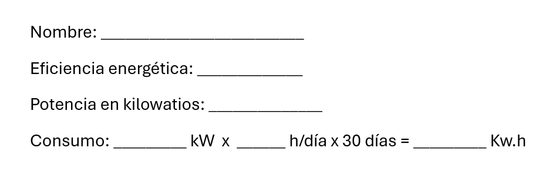
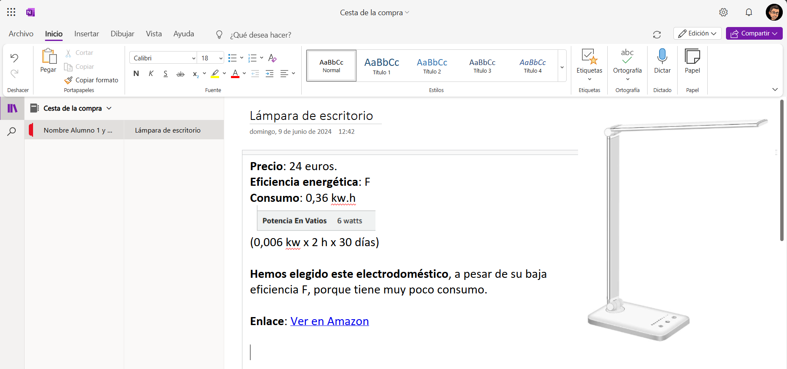
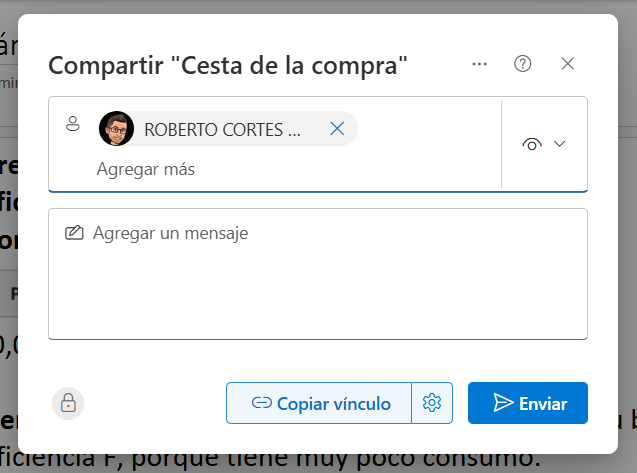

Desarrollo de las sesiones
Materiales para leer o ver en casa.
¿Qué tenemos que hacer y cómo?
Empezamos la clase (15 minutos)
1.- Hacemos un repaso de los contenidos que habéis revisado en casa. Os voy a hacer algunas preguntas para activar vuestros conocimientos previos y asegurarme de que todos lo habéis comprendido.
2.- Después vamos trabajar por parejas.
Primera Actividad (15 minutos)
Vuestra primera tarea consiste en, a partir de la siguiente lista de electrodomésticos (y su tiempo medio de uso), buscarlos en la tienda on-line de Amazon y elegir aquellos que sean EFICIENTES.
- Blender (10 minutos)
- Dishwasher (2 horas)
- Fan (8 horas)
- Hair dryer (20 minutos)
- Iron (30 minutos)
- Microwave oven (30 minutos)
- Refrigerator (24 horas)
- Toaster (10 minutos)
- Vacuum cleaner (20 minutos)
- Coffe maker (20 minutos)
- Electric Kettle (10 minutos)
- Oven (30 minutos)
- Washing machine (2 horas)
- Electric blanket (2 horas)
- Electric toothbrush (10 minutos)
Id rellenando la plantilla que os ha dado el docente.
Haced una captura de pantalla del electrodoméstico y copiad la URL del electrodoméstico.

Segunda Actividad (25 minutos)
Ahora os tenéis que repartir la tarea para realizar un OneNote para crear una cesta de la compra, incluyendo los electrodomésticos que habéis elegido. Debéis escribir los elementos que habéis recogido en la plantilla y explicar por qué habéis elegido ese electrodoméstico y no otro. Es importante que os fijéis en su eficiencia energética y en la potencia del electrodoméstico.

Compartid el OneDrive con vuestro profesor.
